электронный
ресурс по учебной дисциплине 1-58 01 01 - "ИНЖЕНЕРНО-ПСИХОЛОГИЧЕСКОЕ ОБЕСПЕЧЕНИЕ ИНФОРМАЦИОННЫХ ТЕХНОЛОГИЙ"
|
||
| Оглавление | Программа | Теория | Практика | Контроль знаний | Об авторах | ||
|
Практика
ЛАБОРАТОРНАЯ РАБОТА №10 Исследование процессов сухого травления Цель работы: Изучить основные характеристики процесса сухого травления. Написать программу и построить зависимости выходных параметров от входных. Теоретические сведения Сухое травление называют также плазменным травлением, подразумевая использование в этих методах плазмы в виде газовых разрядов при низком давлении. Методы сухого травления широко применяются в технологии СБИС, так как они характеризуются потенциальной способностью высокоточного перевода рисунков резиста. Термин «перенос рисунка» относится к переводу рисунка, созданного маскирующим слоем, на пленку или подложку с использованием химических или физических методов, обеспечивающих формирование поверхностного рельефа. Субтрактивные и аддитивные методы переноса рисунка. Субтрактивный метод переноса рисунка (рис. 1, а) заключается в осаждении пленки, литографическом покрытии ее маскирующим слоем с рисунком и удалении травлением немаскированных участков плёнки. При аддитивном методе, или методе взрывного удаления (рис. 1, б) вначале на подложку наносится литографическая маска, затем на маску и не защищенные ею участки подложки осаждается пленка, после чего участки пленки, покрывающие маску, удаляются путем селективного растворения маскирующего слоя в подходящем жидком растворителе, так что пленка, покрывающая маску, может быть поднята и удалена с поверхности подложки. 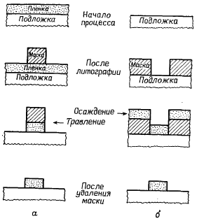 Рисунок 1 – Схемы субтрактивного (а) и аддитивного методов переноса рисунка Применение субтрактивных методов является предпочтительным для современной технологии СБИС способом переноса рисунка. Аддитивные методы способны обеспечить высокое разрешение, но используются редко. Разрешение и профили краев элементов при субтрактивном переносе рисунка. Разрешение, достигаемое в результате процесса травления, является критерием качества переноса рисунка и определяется двумя параметрами. Первый из них — смещение, равное разности горизонтальных размеров маски dm (рис. 2). Допуск является мерой статистического распределения величин смещения, которая характеризует однородность травления в горизонтальной плоскости.
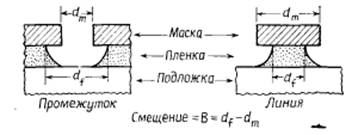 Рисунок 6.2 – Боковой подтрав пленки под маску на границе – маска-пленка Процесс травления с нулевым смещением обеспечивает формирование вертикального профиля края элемента, совпадающего с краем маски (рис. 3,а). В этом случае травления в горизонтальном направлении не происходит и рисунок переносится с идеальной точностью, что соответствует экстремальной ситуации идеально анизотропного травления. При равенстве вертикальной и горизонтальной скоростей травления или, выражаясь более точно, когда скорость травления не зависит от направления, к концу процесса формируется профиль края, имеющий контур четверти окружности (рис. 3,б). В этом случае, т. е. при изотропном травлении, смещение равно удвоенной толщине пленки, подвергавшейся травлению. 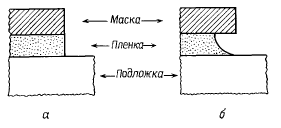 Рисунок 3 – Идеальные профили травления для а – полностью анизотропного (Аf=1) и б – изотропного (Аf=0) травления при отсутствии подтрава маски Любой профиль края элемента, формируемый к концу травления, который соответствует ситуации, промежуточной между теми, что показаны на рис. 3, а и б, образуется вследствие анизотропии скорости травления. Степень анизотропии Af можно определить как 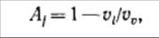 (1) где vi и vv — горизонтальная и вертикальная скорости травления соответственно. Выражая уравнение (1) через параметры элемента, формируемого к концу процесса травления, можно записать 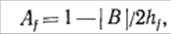
(2) где В — смещение, hf — толщина пленки. Таким образом, для изотропного травления Af = 0, а при l> Af >0 реализуется анизотропное травление. На практике термин «анизотропное травление» часто используют для обозначения экстремального случая Af= 1 (рис. 3,а). На ранних этапах развития производства ИС для компенсации смещения обеспечивали соответствующую компенсацию размеров элементов маскирующего слоя. Рассмотрим в качестве примера травление рисунка, состоящего из полос и промежутков равной ширины. Для упрощения примем, что конечный заданный размер элемента изображения равен df, а элемента маски — dm (рис. 4). 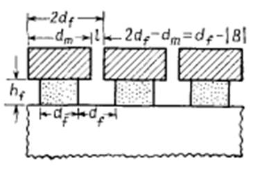 Рисунок 4 – Компенсация размеров элементов маски с учетом смещения для получения в вытравленном рисунке линий и промежутков равной ширины (для простоты профиль края считают вертикальным) Для процесса травления с ненулевым смещением рисунок маски не должен состоять из полос и промежутков равной ширины. Вместо этого размеры элементов маски следует компенсировать, так чтобы минимальный размер элемента маски l составил 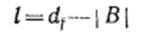 (3) или, с учетом уравнения (2), 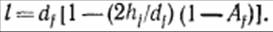 (4) Из уравнения (4) следует, что минимальный размер элемента литографического рисунка пропорционален заданному размеру элемента топологии, причем коэффициент пропорциональности определяется степенью анизотропии травления и относительным увеличением размеров вытравливаемого элемента. Из уравнения (4) следует, что при приближении df к пределу литографического разрешения (для конкретного способа литографии, использованного при создании маски) величина Af должна стремиться к единице (за исключением случая hf<<df, который не представляет практического интереса). Иными словами, по мере уменьшения размеров элементов маски при фиксированном или почти фиксированном относительном увеличении размеров вытравливаемого элемента величину компенсации можно уменьшить, но необходимо обеспечить высокую анизотропию травления. Такая ситуация часто встречается в практике переноса рисунков в технологии СБИС. Селективность и контроль размеров элементов. При описании травления пленки подразумевалось, что подложка и маска не поддавались воздействию травителя. На практике такое случается редко, особенно при использовании методов сухого травления. Чаще все материалы, контактирующие с травителем, характеризуются конечными значениями скорости травления. Следовательно, важным параметром переноса изображений в технологии СБИС является селективность (избирательность) травления, определяемая как отношение скоростей травления различных материалов. Селективность по отношению к материалу резиста необходимо учитывать при контроле размеров формируемых элементов. Селективность по отношению к материалу подложки определяет качество и процент выхода годных приборов (подложкой считается либо кремниевая пластина, либо пленка, выращенная или осажденная в процессе создания предыдущего слоя полупроводниковой структуры). Селективность по отношению к материалу подложки зависит от однородности скорости травления как пленки, так и маски, однородности толщины пленки, степени перетравливания, профиля края элемента маски, анизотропии скорости травления маски и максимального допустимого ухода размеров вытравливаемого элемента. Для количественной оценки влияния этих факторов рассмотрим рис. 5. 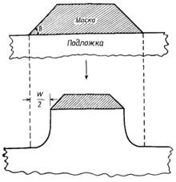 Рисунок 5 – Формирование контура вытравливаемого элемента с учетом конечной сорости травления маски (разность между расчетной и реальной шириной линии равноа W) Рассмотрим процесс травления пленки, средняя толщина которой составляет hf, а однородность толщины определяется безразмерным параметром δ, так что при 0≤ δ ≤1 максимальная толщина пленки равна hf(1+δ), а минимальная толщина составляет hf(1-δ). Предположим, что средняя скорость травления равна vf, а однородность скорости травления определяется интервалом скоростей vf (1±Øf), где Øf — безразмерный параметр (0≤Øf≤1). Наиболее распространенным подходом к оценке селективности, необходимой для обеспечения заданных пределов отклонения размеров формируемых элементов в результате вытравливания маски в любом участке пластины, является задание наихудших условий. В рассматриваемом случае наихудшие условия соответствуют максимальной скорости травления маски и минимальной скорости травления наиболее толстых участков пленки. (Скорость травления определяется как частное от деления глубины травления в вертикальном направлении на продолжительность травления.) При таких условиях продолжительность вытравливания пленки на всю толщину tc определяется выражением 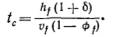 (5) Если продолжительность перетравливания (выраженную в виде доли от продолжительности травления) обозначить А, то продолжительность травления пленки возрастет до £С(1+Д) и выражение для полной продолжительности травления U можно записать в виде 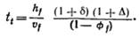 (6) В течение этого времени происходит растравливание маски (рис. 5). Если максимальные скорости вертикального и бокового травления маски обозначить соответственно vv и vi, то край элемента рисунка маски смещается на максимальное расстояние W/2, равное 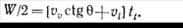 (7) Угол 0 показан на рис. 5. Подставляя выражение для Л из уравнения (6), получим 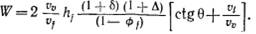 (8) Скорость травления маски определяется вертикальной скоростью травления. В рассматриваемом случае взята максимальная величина vVt что соответствует наиболее жестким требованиям к селективности, необходимой для достижения заданного значения W. Скорость травления маски можно определить с помощью параметра однородности Øт:vv = vm (1 + Øт), где vm — средняя скорость травления маски. 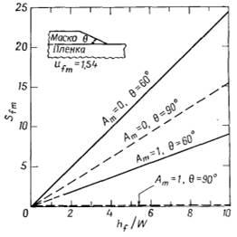 Рисунок 6 – Зависимость требуемой селективности травления по отношению к маске Sfm от отношения толщины пленки к искажению ширины вытравливаемой линии для различных профилей краев элементов маски и экстремальных случаев изотропного и анизотропного травления маски Далее, учитывая что vf/vv = Sfm — заданная селективность травления пленки по отношению к маске и что vi/vv= 1—Ат, где Ат — степень анизотропии травления маски, уравнение (8) можно переписать в виде
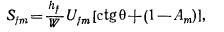 (9) где Ufm=[(1 + δ)(1 + ∆) (l + Øm)]/(l—Øf) — фактор «однородности», учитывающий наихудшее совпадение всех неоднородностей. Полезно рассмотреть пример, иллюстрирующий применение уравнения (9). Предположим, что осуществляется процесс полностью анизотропного травления пленки (Af = 1). В этом случае отклонение размеров элемента изображения связано только с растравливанием резиста. Примем далее, что однородность скорости травления пленки и маски составляет 10%, однородность пленки по толщине равна 5%, а заданная степень перетравливания 20%. Тогда Øf= Øт = 0,1, δ = 0,05 и ∆ = 0,2. Подставив эти величины в уравнение, получим 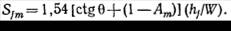 (10) Графики зависимостей, определяемых уравнением (10) для θ = 60° и θ = 90° при условиях изотропного и полностью анизотропного травления маскирующего слоя, приведены на рис.6.6. Для фоторезистивных масок угол 0 определяется применяемым методом литографии и может быть изменен послеэкспозиционной обработкой. Угол 60° является типичным для проекционной литографии, а угол 90° — для контактной. Маски с вертикальными стенками краев элементов (θ = 90°) характерны также для систем с использованием многослойных резистов. Заметим, что предпочтительный случай контроля ширины вытравливаемых линий соответствует анизотропному травлению маски с вертикальными стенками, что достигается применением многослойных резистов в сочетании с процессами реактивного ионного травления Селективность травления материала подложки оценивается аналогичным образом. Для наихудших условий (наиболее тонкая и быстро стравливаемая область пленки лежит на наиболее быстро стравливаемой области подложки) получим 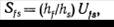 (11) где hs максимально допустимая глубина травления подложки, а 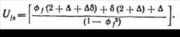 (12) Параметры Øf, ∆ и δ были определены выше. Очевидно, что если бы толщина пленки и скорость ее травления были абсолютно однородны (δ = Øf =0) и не требовалось перетравливания (∆ = 0), селективность по отношению к подложке не имела бы значения. В действительности такие идеальные ситуации в технологии СБИС встречаются редко, причем не только по очевидной причине, связанной с невозможностью достижения идеальных параметров процесса, но и потому, что (даже при условии идеальных однородностей) необходимо перетравливание в тех случаях, когда анизотропное травление проводится по поверхности со ступенчатым рельефом. Необходимость перетравливания иллюстрируется рис. 7. При анизотропном травлении для полного удаления пленки необходимо перетравливание (т. е. травление после того, как с планарной поверхности удален наиболее медленно стравливаемый участок пленки). Как можно видеть из рис. 6.7, для полностью анизотропного травления (Af = 1) ∆.=h1/h2, что и определяет минимальное значение UfS. 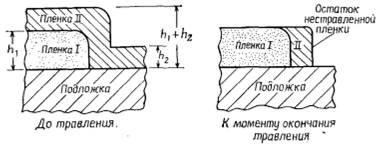 Рисунок 7 – Иллюстрация необходимости перетравливания при анизотропном травлении для удаления излишков материала на ступеньках (для приведенного примера Af = 1) В качестве примера, относящегося к изготовлению полевых транзисторов, рассмотрим травление слоя поликристаллического кремния толщиной 0,3 мкм, покрывающего ступеньку изолирующего окисла толщиной 0,6 мкм с подслоем подзатворного окисла толщиной 0,05 мкм. Для этих условий ∆=2 (200%-ное перетравливание!) и минимальная селективность, требуемая для анизотропного травления, составляет 2(0,3/0,05) = 12, если пленка поликристаллического кремния однородна по толщине и однородно травится, причем процесс травления мгновенно прекращается после полного удаления подзатворного окисла. Поскольку используемый способ травления должен обеспечивать относительно быстрое травление поликристаллического кремния, продолжающееся после удаления подзатворного окисла травление может привести к значительному растравливанию кремниевой подложки, обусловливающему невосстановимое ухудшение параметров прибора. Рис. 8 иллюстрирует зависимость селективности от перетравливания для случая, когда Øf = 0,l и δ =0,05. 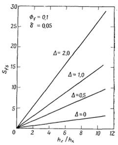 Рисунок 8 – Зависимость требуемой селективности травления по отношению к подложке Sfs от отношения толщины пленки к толщине слоя подложки, удаляемого при различной степени перетравливания Таким образом, селективность по отношению к маске необходима для обеспечения контроля размеров элементов, формируемых проекционной литографией по слою резиста (θ<90°), и (или) когда маска характеризуется конечным значением горизонтальной скорости травления. Селективность относительно подложки необходима для предотвращения нежелательного удаления ранее сформированных областей полупроводниковой структуры. Анизотропное травление предпочтительно для формирования элементов малых размеров, так как в этом случае допустимо лишь очень малое смещение при переносе рисунка. Однако анизотропное травление по ступенчатому рельефу поверхности обусловливает необходимость перетравливания, что в свою очередь повышает требования к селективности. Задание для выполнения лабораторной работы Дорожка поликристаллического кремния толщиной 0,5 мкм проходит через ступеньку изолирующего окисла высотой 1,1 мкм и через подзатворный окисел толщиной 0,05 мкм. Вычислите необходимые значения селективности травления относительно маски и подзатворного окисла, если травление поликристаллического кремния осуществляется в процесс, характеризуемом 10%-ной однородностью скорости травления, Аf=1,0 и Аm=0,5. Варианты заданий:
Порядок выполнения работы 1. Напишите программу, обеспечивающую решение задачи. 2. Постройте зависимости выходных параметров от входных. 3. Оформите отчет и защитите лабораторную работу. Содержание отчета 1. Цель работы. 2. Краткие теоретические сведения. 3. Решение задачи. 4. Код программы и скриншоты рабочих окон. 5. Зависимости выходных параметров от выходных. 6. Выводы по работе. Контрольные вопросы 1. Что собой представляет процесс сухого травления? 2. Какие методы переноса рисунка существуют, опишите их особенности. 3. Нарисуйте схемы субтрактивного и аддитивного методов переноса рисунков. 4. Нарисуйте идеальные профили травления для полностью анизотропного и изотропного травления при отсутствии подтрава маски. 5. Что понимают под термином «селективность травления»? 6. От каких параметров зависит процесс травления? Практика
|
| (С) БГУИР |